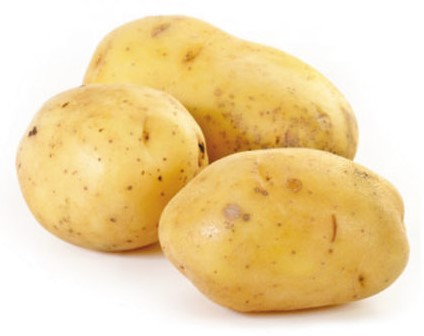

1. Seasons for Growing Potatoes

Potatoes thrive in cooler weather. Here’s how to manage its growing seasons:
- Spring: Ideal time to plant potatoes. Prepare the soil 2-4 weeks before the last frost date and plant when the soil temperature is around 45°F (7°C).
- Summer: Potatoes require consistent moisture during the growing season. Ensure adequate watering and watch for signs of disease.
- Fall: Harvest potatoes after the foliage dies back and before the first frost. Cure potatoes in a cool, dry place before storage.